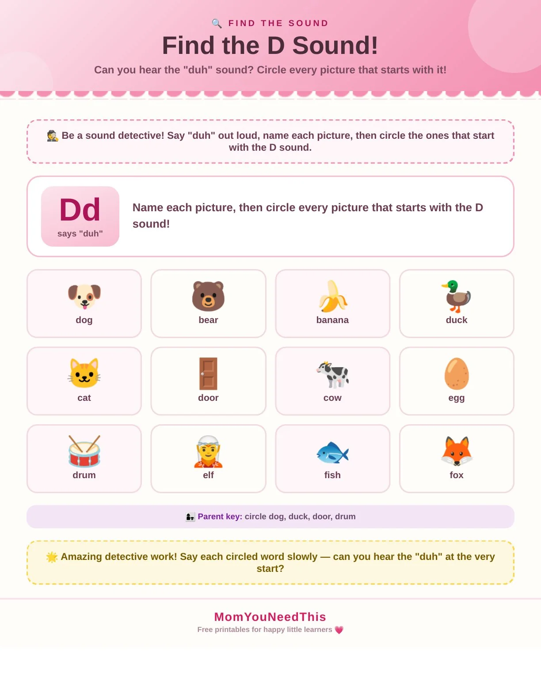

Find Letter D Sound Hunt For Pictures That Begin With The D Sound
Turn phonics into a treasure hunt! Your little detective will search the page for every picture that begins with the D sound.
Quick Answer
This free printable turns phonics into a treasure hunt for the D sound — /d/, the tongue-tap sound in dog, duck and drum. Preschoolers scan a page of pictures, say each name out loud, and circle only the ones that begin with that sound. It builds phonemic awareness — a key early reading skill — and is designed for ages 3-5. Download and print at home with no signup needed.
At a Glance
- Ages: Preschoolers (ages 3–5)
- Activity: A treasure hunt for the D sound /d/ — dog, duck, drum
- Skills: Beginning sounds and listening discrimination
- Format: Printable worksheet (PDF)
- Cost: Free, no signup
🐶 Dog
🦆 Duck
🥁 Drum

🔎 Search & Circle
Scan the page together and say each picture’s name. Every time you hear the D sound at the beginning — that quick tongue tap, /d/ — circle that picture! Stretch the first sound out: d-d-dog. If the word does not start with the tap, it is a trickster — leave it uncircled.
⬇️ Download Free Printable 🖨️ Print🎁 Free printable for toddlers & preschoolers
🕵️ Be A Sound Detective
Put on your detective voices and hunt slowly. The case to crack: which pictures begin with the d sound? Words like dog, duck and drum all begin with it. When you are not sure, say the word slowly and feel your tongue tap behind your teeth — the tap means d.
🏆 Count Your Finds
Count how many D-sound pictures you found together, then tap out the sound once for each find: d, d, d! Counting the finds sneaks in a little math practice too.
🎨 Keep Exploring Free Letter Activities
More alphabet learning activities are added regularly for toddlers and preschoolers.
🎁 View All Free Resources🔊 Know The D Sound Before You Hunt
You are hunting the d sound: /d/, made by tapping the tongue on the ridge behind the top teeth. It is the sound at the start of dog, duck and drum — and also door, doll, desk and dinosaur.
Do not trust your eyes on this hunt — trust your tongue. Say each name slowly: if your tongue taps behind your teeth and your voice hums on the very first sound, it is a d picture. A tap without the hum is t, d's quiet twin — and t pictures are the tricksters here.
After the hunt, keep the case going at home: d hides at the end of words too — hand, bed and red — and in the middle of ladder. Finding those is the detective's bonus round.
🖨️ How to Use This Printable
Get started in minutes — everything here is free and made for busy parents.
- Download the printable. Tap the download button to save the free Free Find Letter D Sound file to your device.
- Print it out. Use any home printer and regular paper — cardstock works great for pages little hands will use again and again. The print button opens the full-size page in a new tab if you prefer to print from there.
- Learn together. Sit with your child and say every picture's name out loud — hearing the first sound is the whole game. When a word starts with the tongue tap /d/, it is a find. Short sessions work best.
- Explore more. Check the free printables linked below for your next activity.
❓ Free Find Letter D Sound FAQs
Is this Free Find Letter D Sound printable free?
Yes — every printable on MomYouNeedThis is 100% free to download and print. No signup, no payment, just tap the download button and print a fresh copy of the D hunt whenever your detective wants another case.
How do I use this alphabet printable?
Print the page and hunt together: say each picture's name slowly, stretch its first sound, and circle the picture only if it begins with the d sound — /d/, like dog. Short, playful sessions work better than long lessons for little learners.
What literacy skills does this practice?
Beginning sounds, listening discrimination, and print awareness. This hunt trains one distinction in particular: separating the tapped /d/ of dog from every other starting sound on the page — including its quiet twin t, which uses the same tap without the voice. These listening skills sit underneath all later phonics and reading.
🔗 More Free Printables You’ll Love
Pair this printable with more free learning activities from the MomYouNeedThis library.
- 🔊 Free Lowercase Letter D Sound PracticeFree printable lowercase letter d sound practice for little learners.
- 🔊 Free Uppercase Letter D Sound PracticeFree printable uppercase letter d sound practice for little learners.
- 🔎 Free Find Letter C SoundFree printable find letter c sound practice for little learners.
- 🔎 Free Find Letter E SoundFree printable find letter e sound practice for little learners.